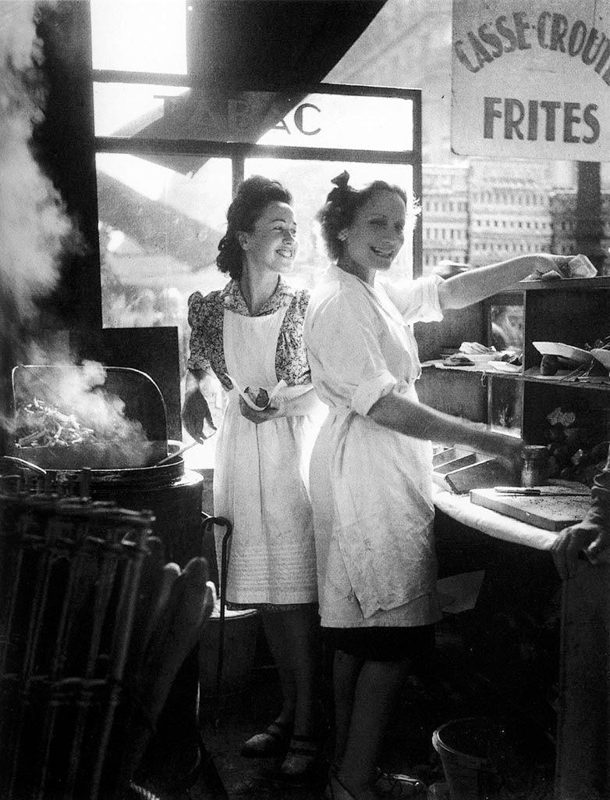

Fundada em 2015, em São Paulo, no bairro da Vila Mariana, a Doce Encanto nasceu do sonho de transformar receitas artesanais em experiências inesquecíveis. Com mais de 10 anos de atuação, conquistamos clientes apaixonados por sabores autênticos e pela delicadeza de cada detalhe. Hoje, contamos com 3 unidades físicas, mantendo sempre o mesmo cuidado e carinho que marcaram o nosso início.
Nossos produtos são feitos com ingredientes selecionados e processos artesanais, garantindo qualidade, frescor e um sabor único em cada doce. Do clássico ao criativo, cada criação é pensada para surpreender e encantar, seja em momentos do dia a dia ou em ocasiões especiais.
Atendemos para todo o Brasil e será um prazer adoçar o seu momento! Entre em contato conosco pelo WhatsApp (11) 99999-0000, pelo e-mail contato@doceencanto.com ou siga nossas redes sociais: @doceencantooficial. Estamos prontos para atender você! Conheça mais sobre nossa história!

A Doce Encanto nasceu da visão e paixão compartilhadas de duas irmãs, Alice e Elena, em São Paulo, no ano de 2015. Crescendo em um lar onde a cozinha era o coração pulsante, as duas desenvolveram desde cedo um profundo apreço pela arte da confeitaria artesanal. Alice, com sua meticulosidade e domínio das técnicas clássicas, e Elena, com sua criatividade inesgotável e talento para inovar, formaram uma dupla dinâmica. O sonho inicial era pequeno: transformar receitas de família em doces que pudessem tocar o coração das pessoas, celebrando os sabores autênticos e a delicadeza de cada detalhe.
O início foi marcado por um intenso trabalho e dedicação. Operando de uma pequena cozinha, as irmãs produziam doces para eventos locais e sob encomenda, conquistando gradualmente uma clientela fiel seduzida pela qualidade impecável e pelo sabor inconfundível. A notícia do talento de Alice e Elena se espalhou rapidamente, impulsionando a demanda e levando à abertura da primeira unidade física em um bairro charmoso de São Paulo. Este espaço não apenas solidificou a reputação da Doce Encanto, mas também se tornou um refúgio para amantes de doces, um lugar onde a tradição se encontrava com a inovação em cada mordida.
o sucesso consolidado, a Doce Encanto expandiu suas operações. Mantendo sempre o compromisso com os ingredientes selecionados e os processos artesanais que garantem a qualidade e o frescor, a marca abriu mais duas unidades físicas, estrategicamente localizadas em diferentes regiões, mas sempre em espaços que refletem a sofisticação e o acolhimento da marca. Além das lojas físicas, o reconhecimento nacional veio com a expansão para o atendimento em todo o Brasil. Através de um eficiente sistema de entrega e embalagens cuidadosamente desenvolvidas para preservar a integridade dos produtos, a Doce Encanto passou a adoçar momentos em lares e celebrações nos mais diversos cantos do país, de capitais movimentadas a recantos mais remotos.
Hoje, a Doce Encanto é sinônimo de excelência na confeitaria artesanal brasileira, celebrando mais de uma década de atuação. As criações de Alice e Elena, que vão do clássico ao criativo, continuam a surpreender e encantar, seja no cotidiano ou em ocasiões especiais. A empresa se orgulha de seu crescimento e da capacidade de levar seus sabores únicos para todos os estados brasileiros, mantendo a essência e o carinho que marcaram seu início. A visão das fundadoras de transformar doces em experiências inesquecíveis se concretizou, e a Doce Encanto segue firmemente estabelecida como um ícone de sabor e qualidade no cenário nacional da confeitaria.